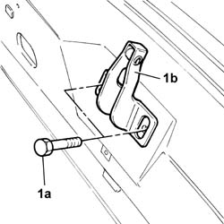

7025B58 Boot lid LOCK striker - R.R.
- Path
- Procedures > 70 FITTINGS > 7025 COMPARTMENT LIDS > 7025B BOOT LID > 7025B58 Boot lid LOCK striker - R.R.
- Kind
- repair procedure (removal / refitting; the operation number is the code)
- Applies to
- all engines; all production periods
- Interactive page
- https://sloeber94.github.io/elrnDB-lThss/en/#/80247
Applies to: all engines; all production periods
 Removing
Removing
 Refitting
Refitting- Open the boot lid.
See in Op. 7040B10 LOAD CARRYING COMPARTMENT LINING - R.R.
See in Op. 7040B12 Luggage compartment/load platform left SIDE LINING - R.R.
-
See in Op. 7040B20 Luggage compartment/load platform lining - R.R.
-
1. Undo the bolts (1a) and remove the striker (1b).

Applies to: all engines; all production periods
Refitting
Removing- Place the striker in position and screw in the fixing bolts without tightening them to torque.
See in Op. 7040B20 Luggage compartment/load platform lining - R.R.
-
See in Op. 7040B12 Luggage compartment/load platform left SIDE LINING - R.R.
-